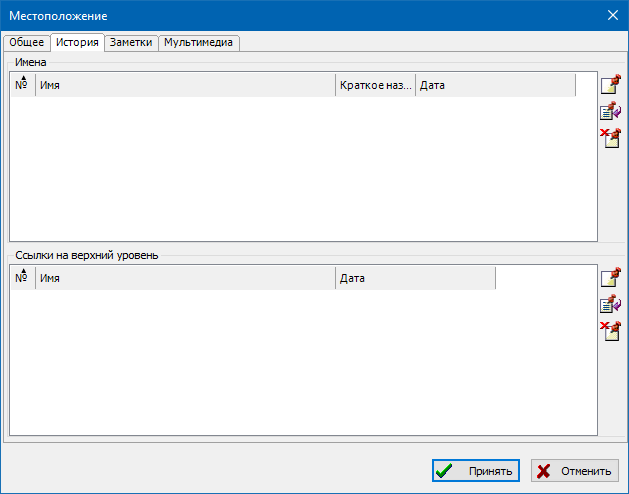
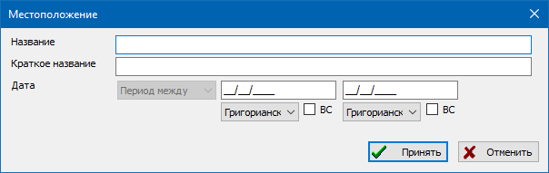
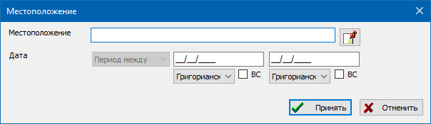
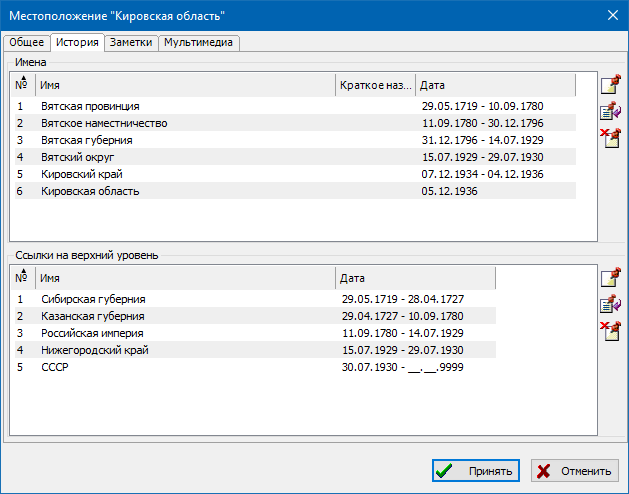

Записи географических мест предназначены для ведения единого справочника различных местоположений совместно с их координатами. При указании места в событиях/фактах персональных и семейных записей можно указывать места в произвольной форме без ссылки на записи этого справочника. Но если требуется выводить места на географические карты - желательно создать запись места в справочника, найти этот населенный пункт или город при помощи связи с Google Maps и задать найденные координаты.
Записи можно снабжать текстовыми заметками с историей этих мест или мультимедиа-материалами (к примеру, фотографиями).
Для задания координат места последовательность действий следующая:
Кнопка "Показать" устанавливает карту "Google Maps" в выбранные координаты.
Все имеющиеся в базе данных места доступны через единую таблицу на закладке "Места" основного рабочего окна. Справа от таблицы - в сводке по записи места, можно просмотреть список всех фактов событий персон или семей, которые ссылаются на данную.

Данный диалог предназначен для ввода и управления историческими сведениями о месте: привязками названий мест и ссылок на верхние уровни иерархии административно-территориального деления к периоду действия. Т.е. если определенный нас.пункт на протяжении истории несколько раз менял своё название - в данном диалоге можно ввести все названия и указать в какие интервалы времени они действовали. Если некая деревня или город в разные периоды входили в разные волости или районы - это можно ввести в нижней секции диалога - "Ссылки на верхние уровни".
Возможно использование различных подходов к ведению справочника мест:
Внимание: при включении опции "Настройки \ Особое \ Расширенная обработка мест" и подключении иерархически организованных мест к датам в диалоге редактирования событий - места начинают автоматически подстраиваться при изменении даты (определяется полное длинное название места в конкретную дату события). Также этот механизм будет работать при использовании инструмента управления местами и на этапе верификации загружаемых файлов.

Диалог предназначен для редактирования названия места и его периода действия. Например: "Вятское наместничество", период действия названия с 11/09/1780 по 30/12/1796.

Диалог предназначен для редактирования ссылки на запись места более высокого уровня и периода подчинения. Например, "Вятская провинция/наместничество" входила в "Сибирская губерния" с 29/05/1719 по 28/04/1727 и в "Казанская губерния" с 29/04/1727 по 10/09/1780.
Пример полного заполнения истории:

Также смотрите: События/факты, Заметки, Мультимедиа-материалы, Карты.